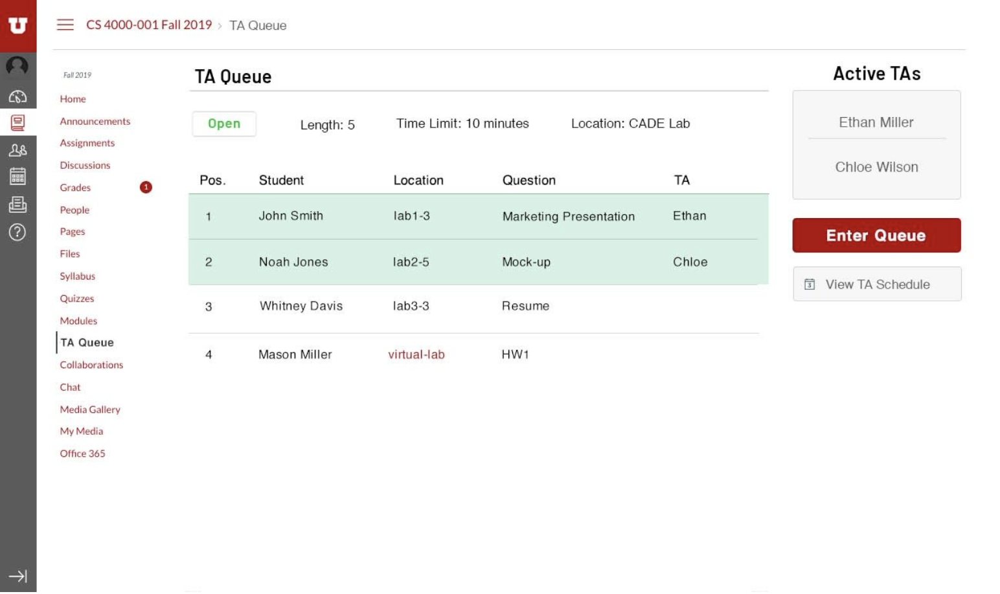
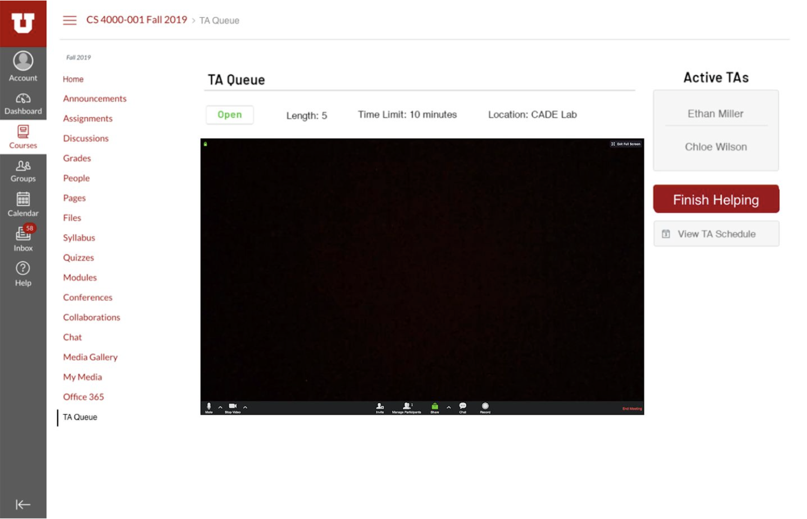
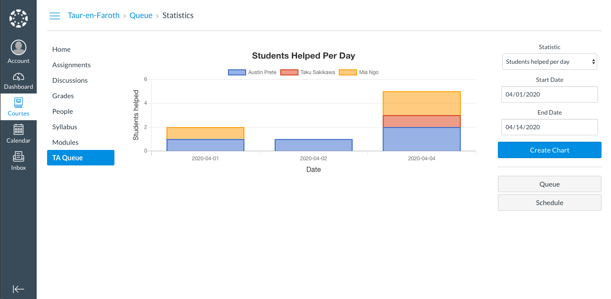
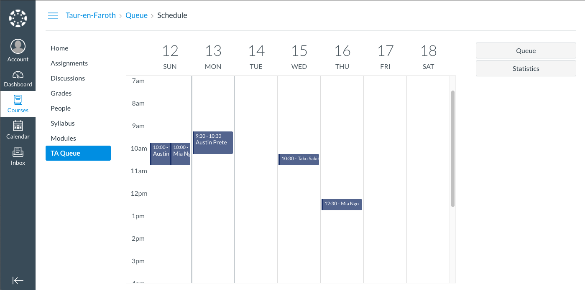

TA Queue
A TA queue system available directly within Canvas
Interactive DemoBeta Presentation
Beta Release Demo
Summary
Desgin Document
A TA queue system available directly within Canvas
Interactive DemoTA hours provide students the chance to get essential one-on-one help on coursework and concepts. However, unstructured TA hours can often be hectic, with each student vying for the limited time of the TAs. The University of Utah School of Computing has helped mitigate that problem by creating a TA queue system which students enter during TA hours and are helped in the order they entered the queue. Unfortunately, this system is currently limited to just the School of Computing. Registration and login are handled entirely outside of the Learning Management System used by the university as a whole, Canvas. A TA queue system available directly within Canvas would provide the benefits of the SoC's system to all classes within our university, as well as any school using Canvas. It also would enable much easier usage by students, TAs and professors, as the queue would be associated with the class in Canvas and TA availability could be entered when setting up course information. Additionally, an option for virtual assistance would allow students to receive help remotely over a video conference with a shared digital whiteboard. Ultimately, the Canvas-integrated TA queue would allow for more efficient and directed TA hours and increase student success as a result.
The basic TA queue
Video Conferencing option for remote TA hours
Statistics page keeping track of useful information such as such as students helped per day, average students helped per day, etc.
Scheduler page, where TA can setup/edit help hours
